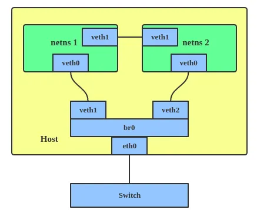

Linux has rich virtual networking capabilities and in the series of posts, I am going to dig into these virtual networking interfaces, how to use them and what are their use cases.
In this post, we will be looking into VETH (Virtual Ethernet) virtual networking interface. VETH devices are virtual ethernet devices. They can act as tunnels between network namespaces to create a bridge to a physical network device in another namespace, but can also be used as standalone network devices.
veth devices are always created in interconnected pairs. Packets transmitted on one device in the pair are immediately received on the other device. When either devices is down the link state of the pair is down.

Use Cases Link to heading
veth devices can be used for communication between two namespaces or from a namespace to the main host namespace. The one end of the veth pair can be placed in one namespace and other end in another network namespace or main host namespace.
Enough of theory, let’s dive into the code and see how you can setup virtual ethernet to allow communication between two network namespaces. To follow up the commands, you must have a linux machine.
Create network namespaces Link to heading
$ ip netns add net1
$ ip netns add net2
When you list, network namespaces it should list two namespaces that we created just now.
$ ip netns list
net2
net1
If you list network devices in these newly created network namespaces, you will find only loopback devices and no other devices
$ ip netns exec net1 ip link list
1: lo: <LOOPBACK> mtu 65536 qdisc noop state DOWN group default qlen 1000
link/loopback 00:00:00:00:00:00 brd 00:00:00:00:00:00
$ ip netns exec net2 ip link list
1: lo: <LOOPBACK> mtu 65536 qdisc noop state DOWN group default qlen 1000
link/loopback 00:00:00:00:00:00 brd 00:00:00:00:00:00
Create veth devices in network namespaces and link them Link to heading
$ ip link add veth1 netns net1 type veth peer name veth2 netns net2
After running the above command, you list network devices in these namespaces you should be able to see virtual ethernet devices as well.
$ ip netns exec net1 ip link list
1: lo: <LOOPBACK> mtu 65536 qdisc noop state DOWN mode DEFAULT group default qlen 1000
link/loopback 00:00:00:00:00:00 brd 00:00:00:00:00:00
2: veth1: <BROADCAST,MULTICAST> mtu 1500 qdisc noop state DOWN mode DEFAULT group default qlen 1000
link/ether fe:e3:ae:62:93:7e brd ff:ff:ff:ff:ff:ff link-netnsid 0
$ ip netns exec net2 ip link list
1: lo: <LOOPBACK> mtu 65536 qdisc noop state DOWN mode DEFAULT group default qlen 1000
link/loopback 00:00:00:00:00:00 brd 00:00:00:00:00:00
2: veth2: <BROADCAST,MULTICAST> mtu 1500 qdisc noop state DOWN mode DEFAULT group default qlen 1000
link/ether c6:c7:72:7d:98:32 brd ff:ff:ff:ff:ff:ff link-netnsid 0
Setup network devices Link to heading
If you have noticed the output of the networking devices, they are all DOWN. We need to up these network devices in namespace.
$ ip netns exec net1 ip link set lo up
$ ip netns exec net2 ip link set lo up
$ ip netns exec net1 ip link set veth1 up
$ ip netns exec net2 ip link set veth2 up
Up veth devices and assign IP Addresses
Link to heading
$ ip netns exec net1 ip addr add 10.10.0.10/16 dev veth1
$ ip netns exec net2 ip addr add 10.10.0.20/16 dev veth2
After assigning IP addresses to the devices, if you run ifconfig in these network namespaces you should be able to see assigned IP addresses.
$ ip netns exec net1 ifconfig
veth1: flags=4099<UP,BROADCAST,MULTICAST> mtu 1500
inet 10.10.0.10 netmask 255.255.0.0 broadcast 0.0.0.0
ether fe:e3:ae:62:93:7e txqueuelen 1000 (Ethernet)
RX packets 0 bytes 0 (0.0 B)
RX errors 0 dropped 0 overruns 0 frame 0
TX packets 0 bytes 0 (0.0 B)
TX errors 0 dropped 0 overruns 0 carrier 0 collisions 0
$ ip netns exec net2 ifconfig
veth2: flags=4163<UP,BROADCAST,RUNNING,MULTICAST> mtu 1500
inet 10.10.0.20 netmask 255.255.0.0 broadcast 0.0.0.0
inet6 fe80::c4c7:72ff:fe7d:9832 prefixlen 64 scopeid 0x20<link>
ether c6:c7:72:7d:98:32 txqueuelen 1000 (Ethernet)
RX packets 6 bytes 516 (516.0 B)
RX errors 0 dropped 0 overruns 0 frame 0
TX packets 6 bytes 516 (516.0 B)
TX errors 0 dropped 0 overruns 0 carrier 0 collisions 0
Now that devices are setup and IP addresses are assigned to them. We should be able to reach one namespace from another namespace using the IP address of each other.
$ ip netns exec net1 ping 10.10.0.20
PING 10.10.0.20 (10.10.0.20) 56(84) bytes of data.
64 bytes from 10.10.0.20: icmp_seq=1 ttl=64 time=0.084 ms
64 bytes from 10.10.0.20: icmp_seq=2 ttl=64 time=0.029 ms
64 bytes from 10.10.0.20: icmp_seq=3 ttl=64 time=0.053 ms
64 bytes from 10.10.0.20: icmp_seq=4 ttl=64 time=0.030 ms
64 bytes from 10.10.0.20: icmp_seq=5 ttl=64 time=0.033 ms
$ ip netns exec net2 ping 10.10.0.10
PING 10.10.0.10 (10.10.0.10) 56(84) bytes of data.
64 bytes from 10.10.0.10: icmp_seq=1 ttl=64 time=0.014 ms
64 bytes from 10.10.0.10: icmp_seq=2 ttl=64 time=0.031 ms
64 bytes from 10.10.0.10: icmp_seq=3 ttl=64 time=0.030 ms
64 bytes from 10.10.0.10: icmp_seq=4 ttl=64 time=0.030 ms
64 bytes from 10.10.0.10: icmp_seq=5 ttl=64 time=0.026 ms
We can even run a web server on a port in one namespace and can reach invoke that web server from another namespace.
Let’s start a simple python HTTP web server in network namespace net2.
$ ip netns exec net2 python -m SimpleHTTPServer
Serving HTTP on 0.0.0.0 port 8000 ...
Now in another terminal, try to make an HTTP request to the web server running in network namespace net2 from network namespace net1 using curl.
$ ip netns exec net1 curl http://10.10.0.20:8000
<!DOCTYPE html PUBLIC "-//W3C//DTD HTML 3.2 Final//EN"><html>
<title>Directory listing for /</title>
<body>
<h2>Directory listing for /</h2>
<hr>
<ul>
<li><a href=".bash_logout">.bash_logout</a>
<li><a href=".bashrc">.bashrc</a>
...
</ul>
<hr>
</body>
</html>
References: